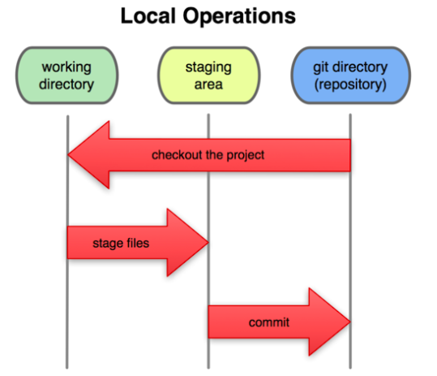

현대
Open Source
Git
Git이란?(2005~)
Linux kernel은 대규모 Open Source Project이다. 이 project의 버전관리를 위해 초기에는 BitKeeper라는 상용DVCS을 사용했었는데 2005년도에 이 BitKeeper의 무료사용이 제고되면서 리누스 토발즈의 주도로 Linux 개발 커뮤니티가 자체 VCS을 개발했는데 이게 바로 Git입니다. 2005년부터 지금까지 주니오 하마노(Junio Hamano)가 소프트웨어의 유지보수를 맡고 있습니다.
Git은 GNU 일반 공중 사용 허가서 v2 하에 배포되는 자유 소프트웨어입니다.
원저자 : 리누스 토발즈
개발자 : 주니오 하마노, 리누스 토발즈
프로그래밍 언어 : C, 셸, 펄, Tcl, 파이썬
운영체제 : 리눅스, POSIX, 윈도우, OS X
언어 : 영어
종류 : 버전관리
라이선스 : GNU 일반 공중 사용 허가서 v2
Git의 특징(2005~)
- 단순한 구조에서 오는 빠른 속도
- 완벽한 분산처리
- branch를 사용한 비선형적 개발 기능
- 속도나 크기면에서 대형Project에 적합
Git의 기본
Git은 파일을 3가지 상태로 관리합니다.
- Commited: 파일을 수정한 후 해당 파일에 대해 commit명령을 실행해 파일을 로컬 데이터 베이스(로컬 Repository)에 안전하게 저장한 상태
- Modified: 파일을 수정한 후 아직 로컬 데이터 베이스에 commit하지 않은 상태를 의미
- Staged: 파일을 수정한 후 수정 할 파일을 곧 commit 할 것이라고 표시한 상태를 의미
Git은 파일상태 관리와 더불어 3가지 영역을 사용합니다
- Git directory : Git이 project의 메타 데이터와 객체 데이터베이스를 저장하는 곳을 의미합니다. 다른말로 Local Repository라고 하며 만약 특정 폴더를 Git directory 로 설정하려면 git init명령을 이용하면 됩니다. Repository로 설정되면 .git이라는 숨김폴더가 생성되고 이 안에 Git관리 정보들이 생성됩니다.
- Staging Area: Git directory에 존재하며 단순한 파일입니다. 곧 commit할 파일에 대한 정보를 가지고 있게 됩니다.
- Working directory: project의 특정 branch를 checkout한 내용이 들어있는 폴더
Git으로 하는 작업의 기본 순서
- Working directory에서 파일 수정
- Staging Area에 수정한 파일을 Stage해서 commit할 Snapshot 생성(git add)
- Staging Area에 있는 수정된 파일을 commit해서 Git directory에 영구적인 Snapshot으로 저장(git commit)

GitHub

GitHub란?(2008~)
깃허브는 분산 버전 관리 툴인 깃을 사용하는 프로젝트를 지원하는 웹호스팅 서비스어 입니다. GitHub는 영리적인 서비스와 오픈소스를 위한 무상서비스를 모두 제공합니다. 2009년의 Git사용자 조사에 따르면 GitHub는 가장 인기있는 Git호스팅 사이트입니다. 또한 2011년의 조사에서는 가장 인기있는 오픈 소스코드저장소로 꼽혔습니다.
깃이 텍스트 명령어 입력방식인데 비해, 깃허브는 화려한 그래피 유저 인터페이스(GUI)를 제공합니다. 깃허브는 페이스트빈과 유사한 서비스인 Gits와 위키를 각 저장소마다 운영하고 있으며, 깃 저장소를 통해 고칠 수 있습니다.
깃허브 회사는 2008년 톰 프레스턴워너(Tom Preston-Werner), 크리스 완스트래스(Chris Wanstrath), 피제이 하이엣(PJ Hyett)이 공동 설립했습니다. 본사는 미국 캘리포니아 주 샌프란시스코에 있으며 2018년 6월 4일 마이크로소프트는 7,500,000,000 달러에 깃허브를 인수할 것이라 발표하였습니다.
GitHub에서 가능한 것들
- 깃허브는 대부분 코드를 위해 사용됩니다.
- 다양한 마크다운 식의 파일 포맷의 자동으로 렌더링 되는 README파일을 포함한 문서화
- 레이블, 마일스톤, asignee, 검색엔진을 갖춘 issue tracker(기능 요청 포함)
- 코드 검토 및 댓글을 지원하는 Pull Request
- Commit history
- 그래프
- Integration Directory(연동 디렉터리)
- diff 통합 및 분석
- 이메일 알림
- 파일 내의 중첩 작업 목록
- 지형공간 분석 데이터 시각화
- PDF 문서 뷰어
- 각기 다른 패키지에서 공통 취약점 및 노출로 알려진 보안 경보